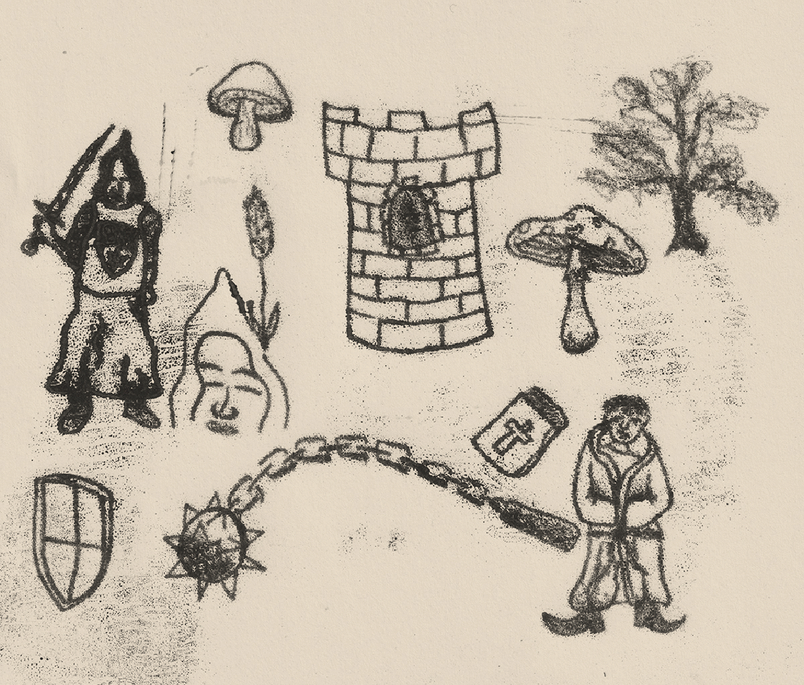
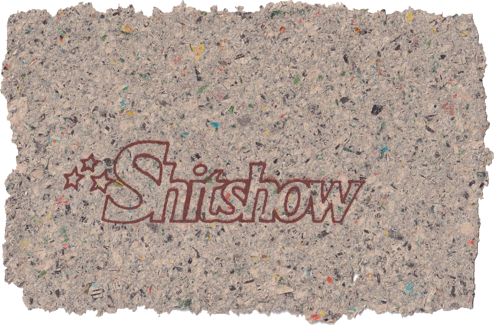
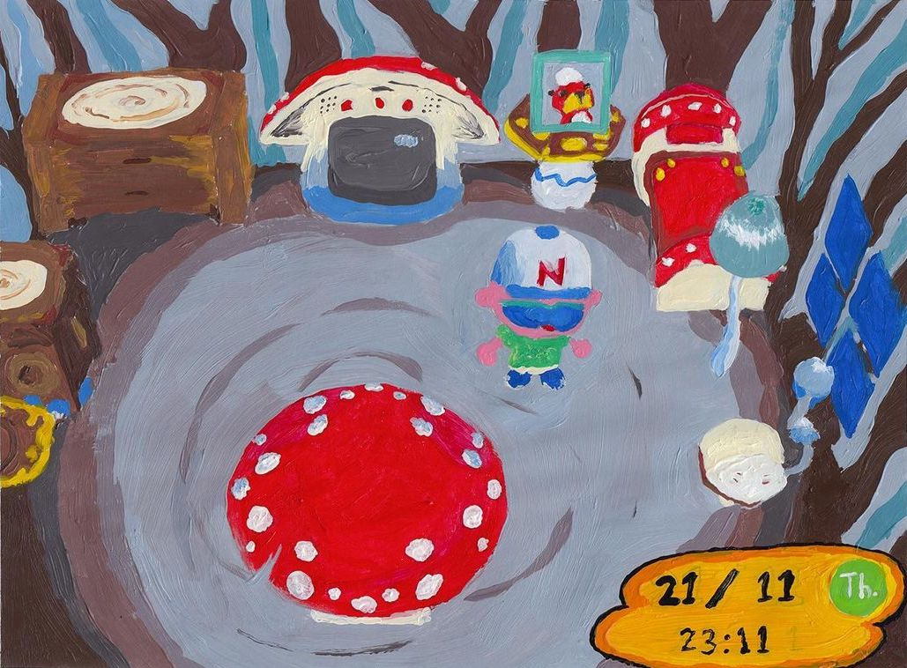
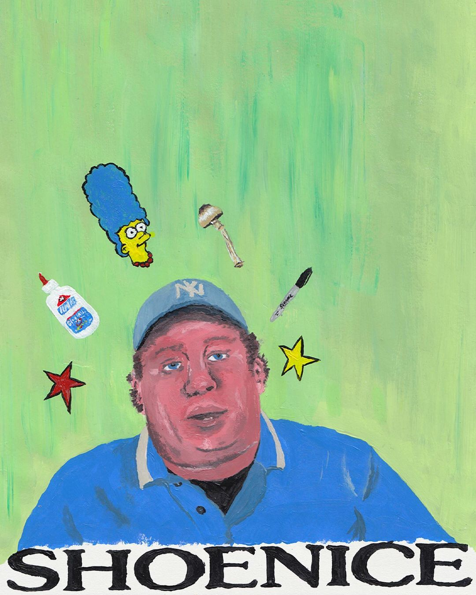

A range of monoprint artworks I have made.

A frame by frame animation I created, where each frame is a monoprint.

Animated text I created using risograph printed text.

Screen printed logo on recycled paper I created from second hand comics.

MY ROOM IN ANIMAL CROSSING, acrylic paint on paper, 297x210mm

SHOENICE, acrylic paint on paper, 210x297mm
BACK